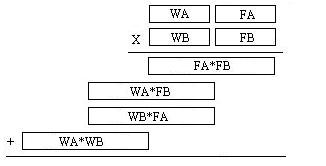

| Date: | March 17/18 |
| Lecture: | 23 |
| File: | DDS |
| Status: | Not Started
|
| Handout: | TBD
|
DDS
Direct Digital Synthesis (DDS) is a technique to create periodic
waveforms with very precise frequency control using a system with
a fixed clock frequency. The periodic function is stored in a look-up
table like the following for a sin wave.
int8 sin[64] = {128,141,153,165,177,189,200,210,219,227,235,241,246,250,253,255,
255,254,252,248,244,238,231,223,214,205,194,183,171,159,147,134,
122,109, 97, 85, 73, 62, 51, 42, 33, 25, 18, 12, 8, 4, 2, 1,
1, 3, 6, 10, 15, 21, 29, 37, 46, 56, 67, 79, 91,103,115,128};
Being Computer Engineers, lets use a table which has length 2^N, this will
prove to be a good choice later on. Our goal is to reproduce this function
for any choice of frequency
F which should be adjustable on-the-fly.
Fixed Point
Lets generalize our notion of regular binary coded number to the right
of the decimal point. If you are told that 10010 is a binary coded number
how do you (formally) determine what decimal value it represents? You
need the equation:
value = sum(bi*2i)
Where the sum ranges over all the bit positions i. Remember that the
LSB (the one closest to the decimal point) is ALWAYS index 0. Hence
our number in question could be written as:
1*2
4 + 0*2
3 + 0*2
2 + 1*2
1 +
0*2
0 = 16 + 2 = 18
Well now generalize this idea to the right of the decimal point and take
a stab at what 1.11 means? Well for this number you would have indices
that are negative (to the right of the decimal point).
1*2
0 + 1*2
-1 + 1*2
-2 =
1 + 0.5 + 0.25 = 1.75
Lets now convert 1.53125 into binary. This is done by using the tried
and true technique of finding the largest power of 2 that will fit into
the number, subtracting it and then continuing the conversion with the
difference. This process stops when you get down to zero. To illustrate:
- The largest power of two that fits into 1.53125 is 20 = 1.0
- The largest power of two that fits into 0.53125 is 2-1 = 0.5
- The largest power of two that fits into 0.03125 is 2-5 = 0.03125
Thus the binary representation of 1.53125 is 1.10001 Interestingly
enough, some rational real numbers do not have an rational binary
representation, that is a real number that can be represented as the
ratio of two whole numbers (terminating decimal number) may have a binary
representation that repeats endlessly. For example the decimal number
0.1 cannot be represented as a finite binary string of 0's and 1's
(give it a try).
Fixed point arithmetic
When the need arises to represent numbers with fractions
in a situation where hardware resources are limited or where you would
like to keep the complexity to a minimum then you might want to consider
the use of fixed point numbers. For example, assume that you are
working on a circuit which requires you to represent an angle and you
need a keep track of the fraction. This can be done quite nicely
using a representation.
W7 W6 W5 W4 W3 W2 W1 W0 . F7 F6 F5 F4 F3 F2 F1
The 8 W-bits represent the whole portion of the fraction and the 8 F-bits
represent the fractional portion. The resulting 16-bit number can
be manipulated as a whole with some minor book keeping to keep track
of the decimal point. As an exercise determine the representation of
35.5 and 45.25 Note, that you should be reminded that there is no
implicit meaning in the set of 16 bits used to represent this pair of
numbers; bits have no meaning. Now, consider the problem of adding to
fixed point angles (23.5 and 45.25) stored in the format above
000010111 1000000 (23.5)
+ 000101101 0100000 (45.25)
---------------------
001000100 1100000 (68.75)
You can see that the addition is carried off without concern for the
decimal point. Multiplication is very much the same but now you need
to keep track of the pesky decimal point and make sure to put it back
where it belongs. In the abbreviate example below we will assume that
23 have a 4-bit representation where the decimal point resides in the
middle of the number. We will multiply 3.25 and 1.25.
1111 (3.75)
x 0101 (1.25)
--------------
1111
0000
1111
+ 0000
----------------
100.1011 (4.6875)
A more interesting case arises when you have to use a multiplier that
is not the right size. Lets consider the multiplication
of two 16-bit fixed point numbers (representing angles) WA:FA and WB:FB.
From our discussion above the product requires 32-bits to represent.
According to the rules for multiplication for numbers the decimal point
will have to be placed after the 16-bit. Unfortunately you only have
an 8-bit multiplier on hand to use. This means that you have a piece
of hardware that can take in 2 8-bit numbers and generate a 16-bit
result. The figure below shows how the operands are split naturally into
8-bit chunks and how the partial product is naturally composed of 4
chunks. You would then have to make sure that you had hardware to perform
the adds of the 16-bit quantities.

Phase Increment
Lets say that you could provide a new sample from the sin table at 48kHZ
(through an interrupt) to the codec. If you incremented the pointer in the sin
table by 1 on every interrupt, then you would work your way through the table
every 64*21uS = 1.3mS generating a sine wave with frequency about 750Hz.
If you incremented the pointer in the sin table by 2 every interrupt then
you would only require 32*21uS = 0.65mS to generate one period of the
sine wave for a frequency of about 1.5kHz.
Using integer values for the increment we are limited to very coarse
adjustments in the frequency. For example how could you use this schema
to generate a sin wave with frequency of 1.0kHz? Well you would need to
increment the pointer in the sin table by 1.5 every 21uS. And surprisingly,
you can easily accomplish this using a fixed point representation. This
fractional value is called the phase increment. Lets look at how the phase
increment, update rate, and size of the LUT are related to the output
frequency.
1) Given a lookup table with 2^N values corresponding to one wavelength of a function.
2) Given a sampling rate or a play back rate of f updates/second
3) Given a phase increment x, which every 1/f is added to the index of the LUT.
f updates x values 1 cycle f*x
--------- * --------- * --------- = --- hz
1 second update 2^N values 2^N
Question:
Assuming an update rate of 48kHz, a LUT with 1024 entries, and a phase increment
of x, expressed as a 10.6 fixed point number. Answer the following questions.
- What is the maximum frequency we could generate?
- What is the minimum frequency we can generate?
- What is the smallest change in frequency we can make with the phase increment?
- What phase increment generates a frequency of 440hz?
- How did I arrive at the format of the phase increment?